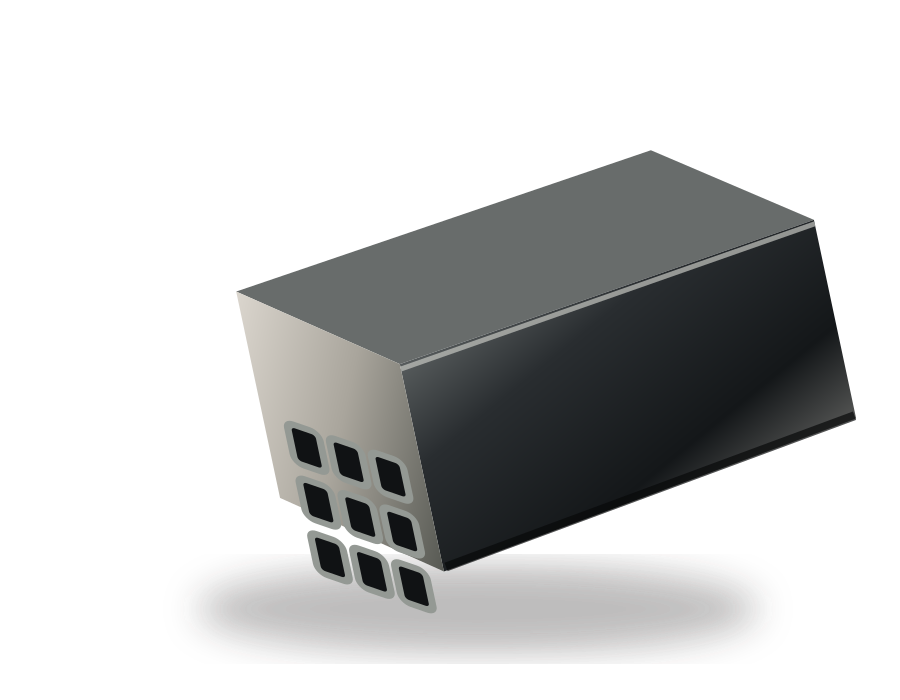
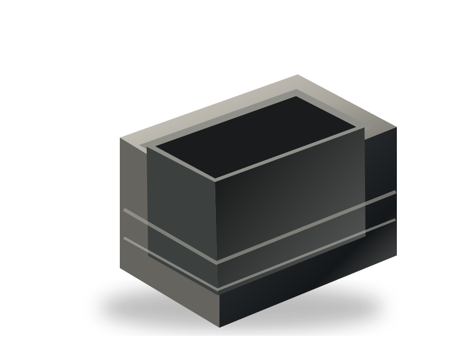

NORDIC TUBE / PRODUKTERUtviklet for
 LADEFUNDAMENTERLadefundamenter ↗
LADEFUNDAMENTERLadefundamenter ↗ KABELBESKYTTELSEDelbare rør ↗
KABELBESKYTTELSEDelbare rør ↗
Utviklet for
virkeligheten.
Fire produktområder. Utforsk løsningene og ta kontakt for teknisk produktinformasjon.

KABELBESKYTTELSEUtilis Multichannel ↗Et system med flere kanaler for strukturert føring og beskyttelse av kabler i tekniske anlegg.

TREKKEKUMMERModulære kummer ↗Modulbaserte kumløsninger for prosjekter som krever fleksibel plassering og tilgang til teknisk infrastruktur.
LADEFUNDAMENTERLadefundamenter ↗Fundamentløsninger til infrastruktur for elbillading. Et praktisk fundament er en viktig del av en gjennomtenkt installasjon.
KABELBESKYTTELSEDelbare rør ↗Delbare rør kan monteres rundt eksisterende føringer der demontering eller gjennomtrekking er upraktisk.